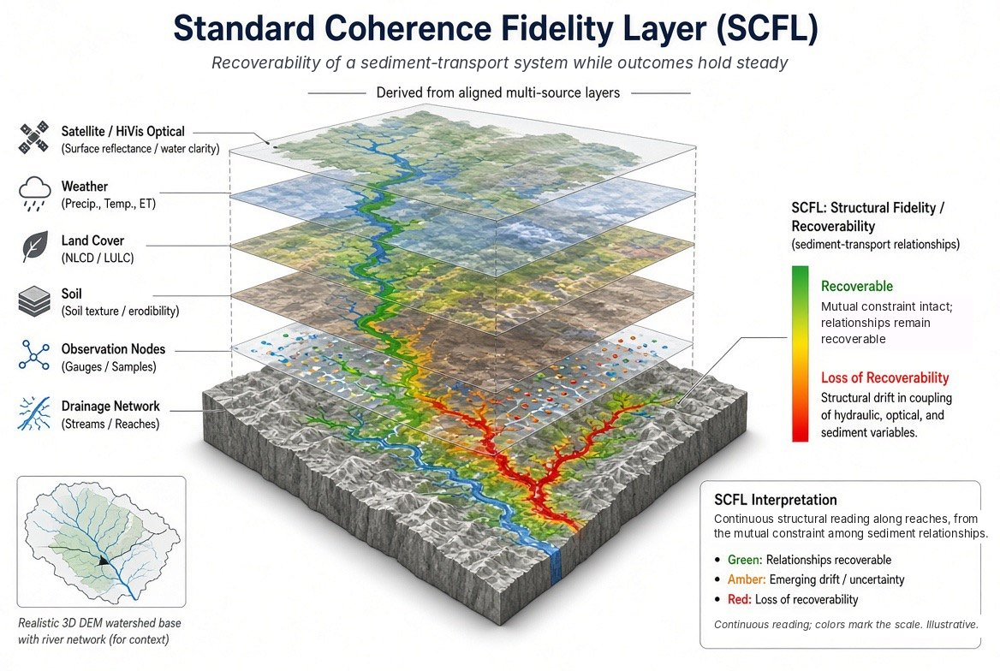

Problem Space 6 of 7 · Localization
Where in the network is recoverability being lost?
Across a network, outcomes can hold steady while recoverability is lost along particular branches. Aligned layers from satellite, weather, land cover, soil, gauges and the drainage network feed one reading, mapped along each reach. The result tells crews and planners where to look first.
You'll recognize this if you know the network is under strain, but not which branch to send the crew to first.

What you receive
A continuous reading along each branch of the network, showing where recoverability is being lost.
Who uses it
Water and watershed agencies, pipeline and transmission operators, any network owner allocating crews.
What it starts from
Aligned layers from multiple sources, within a stated boundary.
One Question Challenge
Can the answer to one question begin a transformation for your organization?
Bring us your version of this question. One well-formed structural question shows whether SCFL can reach your organization's condition space. No data leaves your environment. No implementation required. No commitment beyond the question itself.
Take the ChallengeFigures are illustrative. SCFL-Quad is patent pending. Upstream Coherence Measurement Stratum (UCMS).